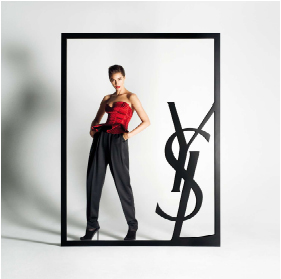
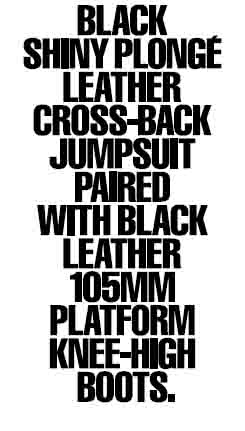

-
YSL Manifesto at Bedford Avenue
by Stephen Squibb September 22, 2009
Last week, while walking north on Bedford Avenue I encountered no less than six young women, dressed uniformly in fashionable white shirts and black bottoms passing out envelopes in front of the subway. “YSL Manifesto for Fashion Week,” they offered, pausing momentarily before adding, “It’s interesting.”
This was not exactly a lie. For although the distribution of sundry papers on street corners is a commonplace in New York, few such operations present so integrated a spectacle. Their appearance indicating some outside designer, the young woman seemed, if not completely invested, at least sufficiently convinced of the importance of what they were doing. Their slightly fatigued plea betrayed the firm conviction that if but one of the hipster rainbow aggressively ignoring them would but examine the YSL Manifesto that they, too, would quickly agree to its significance.
This may, in fact, be the case. Not having the slightest education or experience in the professional vernacular of fashion — or in the biannual, weeklong orgies organized for its ritual consumption — I have no way of knowing what that community counts as a historic document. Indeed, it is quite possible there was once a young fashion designer wandering the streets of Paris who was similarly introduced to one of Breton’s manifestos, and met that text with a similar skepticism, though I doubt it.
Still, there is likely a more subtle relationship at work here, and maybe fashion week bears the same relationship to merchandise as does the Whitney Biennial. In that case the immediate temptation — to recount, yet again, the slow mummification of a once meaningful format, the manifesto, in this case, via its diffusion among the lesser and inevitably more popular arts — should probably be resisted. It is an old story, after all, and one told more ably elsewhere. Better instead to examine the corpse of the thing itself and see what of its former likeness persists.

The document contains very little in the way of typical manifesto verbiage, and what is here is confined to one paragraph on the front page. The rest of the booklet consists in uninspired fashion photography interrupted by pages of large block type describing said images. The text, though brief, is worth quoting in full:The YSL Manifesto: a global fashion statement directly diffused across borders and demographics. A message in a gesture, amplified to democratize a system of dressing, given rhythmic effect through repetition. Fashion made larger than life, taken off-stage, manifested in the street and at the moment it seems the most incidental, and at once the most profound. The Yves Saint Laurent Fall/Winter 2009-2010 collection: Stefano Pilati’s art of understatement. Illusion stripped away from a posture to reveal its heart; a pure, punctuated chic. Black leather and grey flannel as the ingredients of a signature expression of tailoring and technique. A story of classic fashion rewritten, inherited forms recast. This is what happens in the ushering in of a new era.
What is immediately clear is that, while indicating no great study of the form, the YSL Manifesto take as inspiration the epiphenomenal pretention that guides gallery press releases. Granted, its relationship to these texts compares as does a face to a portrait drawn by a near-sighted post-impressionist from across rush hour traffic – but the general outline is available if you squint. There is first of all the embrace of some ill-defined populism, at once insurgent and global, that has been waiting for these clothes to service its desire. There is the well formed tautology, given rhythmic effect through repetition, whose ambient poetry almost conceals its total lack of meaning. And the vaguely critical-sounding buzz words: diffuse, democratize, punctuated; before the final arrival of a ludicrous grandiosity revealing the whole thing as overcooked copy hopped up on a borrowed lexicon: This is what happens in the ushering in of a new era.
What is it with the epoch fetish? This desire to be always already at the beginning of some larger cultural trend about to unleash its dynastic eternity, what is that? Is it simply a response to late capital’s ever accelerating sandcastle cycle: this frantic construction of increasingly unmoored accounts of who we are and what comes next? Or is it just, for lack of a better word, fashion? Is era-ushering the new black?
F/W 2009-10 Yves Saint Laurent Manifesto Shot 4
It’s hard not to see the legacy of certain trend in art-historical pedagogy at work beneath all of this. We are trained to think in terms of a progression of styles, forms, and complaints: the glorious march of the avante-gardes: dada begat futurism begat surrealism begat the Situationsists. Eras are what we remember, after all; their edges, in particular, persist.So maybe the YSL Manifesto for Fashion Week is best taken as a massive compliment, a sort of endearingly off-key imitation penned by a fabulously wealthy younger brother. And how different is fashion anyway? I’m writing here across the boundaries of two cultural spheres, clucking at another’s audacity for cribbing from my own. Step back far enough and this whole thing looks like the narcissism of very minor differences.
Both art and fashion are economically buoyed by a wealthy patron class, and each arrives equipped with its own deep vertical hierarchies, star system, glamour, parties, feuds, factions, insularity, critics, media apparatus, and the like. What’s more, neither world is exhausted by fat cats wielding Am Ex cards and six, seven or eight figure paychecks. There are also bloggers (yes, she’s 13), writers, photographers, young designers, stylists and various other strivers that serve to flesh out art and fashion’s remarkably congruent constituencies. So maybe the story is simply the manifesto’s migration from politics to cultural production. Maybe that’s where it belonged in the first place.
Fine, but granting all that, YSL simply has to do a better job. This is one lethally dull manifesto. Even if it is unjust to chock this failure up to its cultural origins, even if we allow that fashion in the sort of thing available to modification via manifesto, the fact remains that this particular document does not inspire confidence. Fashion, it would seem, is still waiting. I would advise getting comfortable but, as we know, in fashion, comfort is always counter-revolutionary.
Thanks to B. Blagojevic

{kind=link}